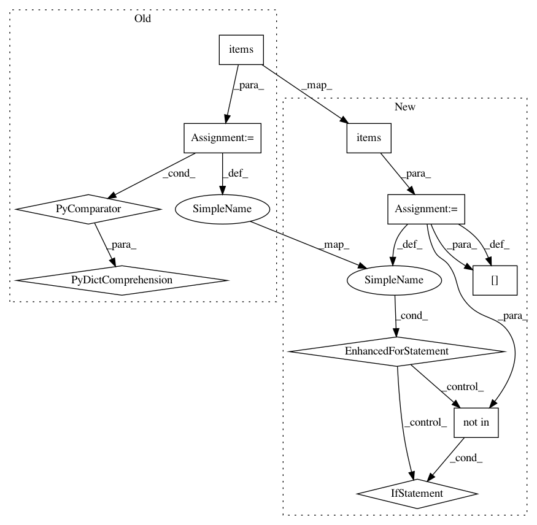

39a28aba95b0d8eeb56f7a17b7dad140e601b591,architectures/tensorflow_components/architecture.py,TensorFlowArchitecture,_feed_dict,#TensorFlowArchitecture#Any#,269
Before Change
time.sleep(0.00001)
def _feed_dict(self, inputs):
return {
self.inputs[input_name]: input_value
for input_name, input_value in inputs.items()
}
def predict(self, inputs, outputs=None):
Run a forward pass of the network using the given input
After Change
def _feed_dict(self, inputs):
feed_dict = {}
for input_name, input_value in inputs.items():
if input_name not in self.inputs:
raise ValueError((
"input name {input_name} was provided to create a feed "
"dictionary, but there is no placeholder with that name. "
"placeholder names available include: {placeholder_names}"
).format(
input_name=input_name,
placeholder_names=", ".join(self.inputs.keys())
))
feed_dict[self.inputs[input_name]] = input_value
return feed_dict
def predict(self, inputs, outputs=None):
In pattern: SUPERPATTERN
Frequency: 3
Non-data size: 10
Instances
Project Name: NervanaSystems/coach
Commit Name: 39a28aba95b0d8eeb56f7a17b7dad140e601b591
Time: 2018-02-21
Author: zach.dwiel@intel.com
File Name: architectures/tensorflow_components/architecture.py
Class Name: TensorFlowArchitecture
Method Name: _feed_dict
Project Name: jsalt18-sentence-repl/jiant
Commit Name: 7c3c41e93c1ad3dacbc2cbbaab9942a8d96c37bc
Time: 2020-09-29
Author: email@jasonphang.com
File Name: jiant/utils/torch_utils.py
Class Name:
Method Name: copy_state_dict
Project Name: BindsNET/bindsnet
Commit Name: 2d4e1b8b6a437203045f144fc34ccf928243a7af
Time: 2018-03-05
Author: hqkhan@umass.edu
File Name: bindsnet/analysis/plotting.py
Class Name:
Method Name: plot_spikes